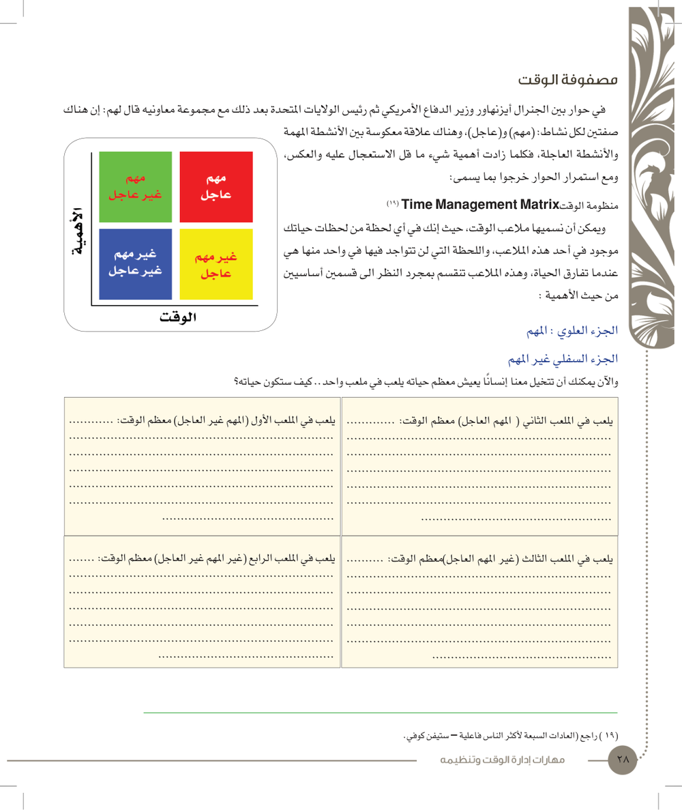
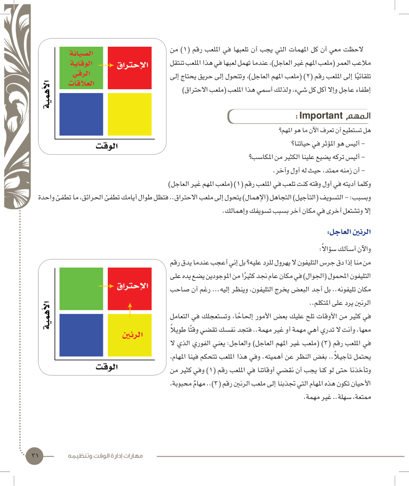
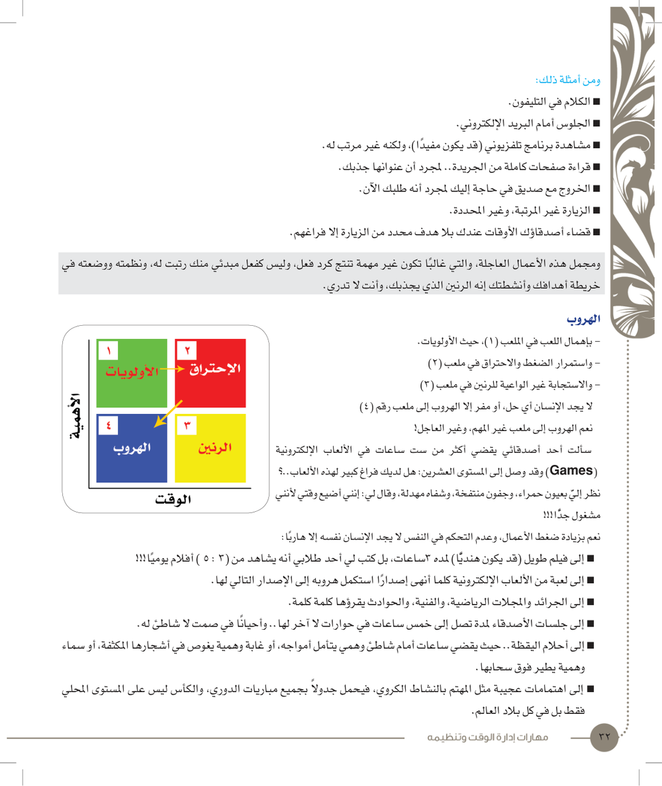
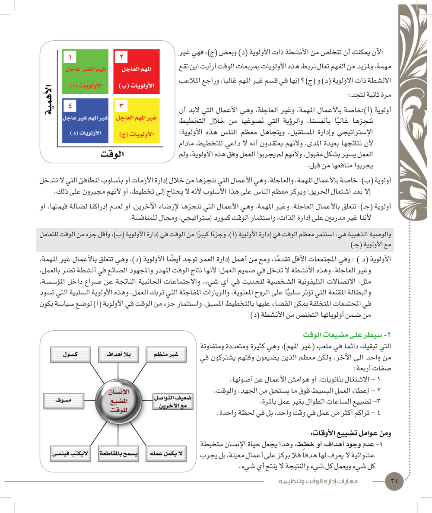
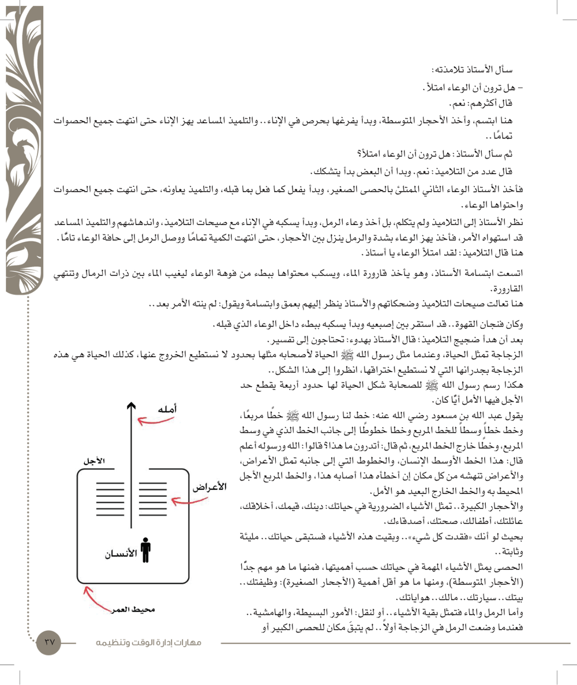
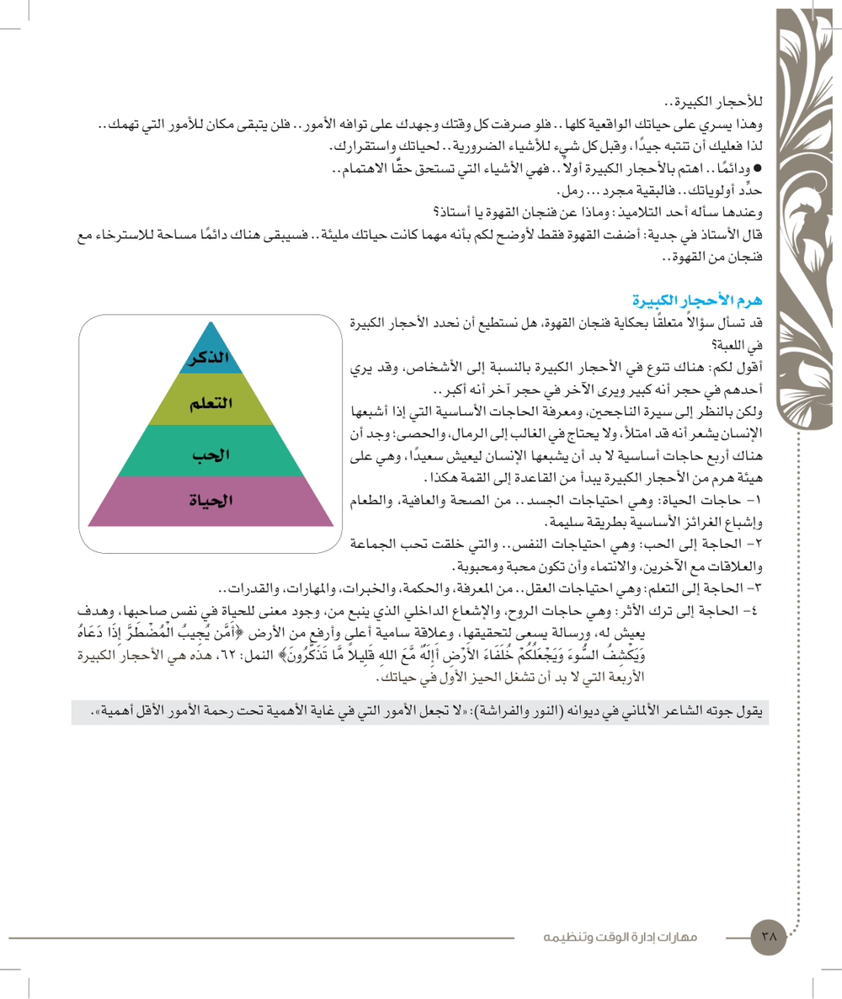

النقاط الأساسية من الكتاب (صفحات 18–39). الملخص الكامل على الدرايف.
الوحدة هذي عن الوقت: وش هو، وليش هو أغلى شي تملكه، وكيف تديره صح. أهم شي فيها مصفوفة الوقت بملاعبها الأربعة (الأولويات، الاحتراق، الرنين، الهروب) وأبجديات الأولويات من (أ) لـ(د). وبعدها مضيعات الوقت، والتسويف، وقصة فنجان القهوة وهرم الأحجار الكبيرة.






26 سؤال على هذي الوحدة، و25 سؤال منها من الاختبار التجريبي حق الدكتور. الجواب يطلع لك على طول، وتقدّمك ينحفظ.